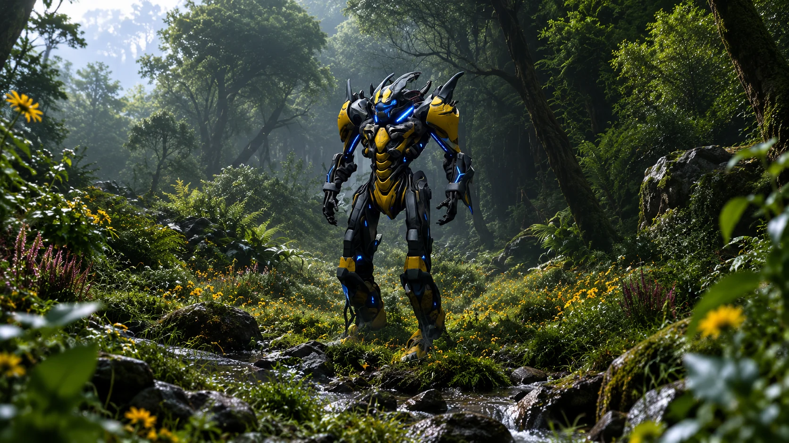

Field Observation
Krythao activated a red-blue portal in the upper-left forest. The portal provides hostile transit infrastructure within Earth 1's forests.
 ©
©
GENEZYS ARCHIVE · Synthbot
Venom Striker
Identity & combat record
Archive node 01 / 04
Archive record
Krythao strikes first and lets the venom do the rest. The Corrosive Gash pierces every enemy on the field with septic rot. Within the Horde, Krythao is known as the shell that never stops growing.
Combat signature
Spoils septic rot: Deals 60 pierce damage to all.
Genezys 10:04 ™&©2026LEGIONS
Field intelligence
Archive node 02 / 04
FIELD REPORT // HOSTILE PORTAL ACTIVATION

Field Observation
Krythao activated a red-blue portal in the upper-left forest. The portal provides hostile transit infrastructure within Earth 1's forests.
Environment
Object Analysis
Key Findings
Restricted visual records
Archive node 03 / 04

Motion archive
Archive node 04 / 04
Motion record not yet recovered